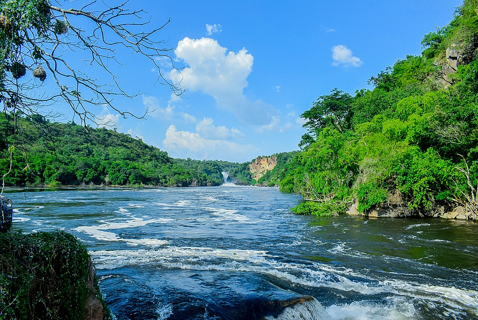

Il Nilo in Uganda
Il Nilo (in arabo نَهْر ٱلنِّيل?, Nahr al-Nīl) è un fiume africano lungo 6 852 km che attraversa sette Stati dell'Africa. Si contende il primato di fiume più lungo del mondo con il Rio delle Amazzoni.
È formato da due grandi rami confluenti, il Nilo Bianco e il Nilo Azzurro; quest'ultimo contribuisce con un maggior apporto di acqua e di limo fertile, ma il primo è il più lungo. Il Nilo Bianco nasce convenzionalmente dal Lago Vittoria a Jinja, in Uganda, ma le sue fonti si spingono fino al Ruanda e al Burundi; scorre poi verso nord attraverso l'Uganda, il Sudan del Sud e il Sudan. Il Nilo Azzurro invece nasce convenzionalmente dal Lago Tana, in Etiopia, e scorre attraverso il Sudan sud-orientale. I due fiumi si incontrano e si fondono presso la capitale sudanese Khartum.
Il corso settentrionale del fiume scorre quasi interamente attraverso il Sahara, dal Sudan all'Egitto, un paese la cui civiltà è dipesa dal fiume fin dai tempi antichi e più remoti. La maggior parte della popolazione egiziana e tutte le sue città (con l'eccezione di quelle situate lungo la costa) si trovano lungo la valle del Nilo a nord di Assuan, e quasi tutti i siti storici e culturali dell'Antico Egitto si trovano lungo le sponde del fiume.
Alla fine il Nilo si dirama in un grande delta e sfocia nel Mar Mediterraneo. Il suo numero di Strahler è 10. Dalle sorgenti al delta il Nilo attraversa sette paesi africani: Burundi, Ruanda, Tanzania, Uganda, Sudan del Sud, Sudan ed Egitto, ma il suo bacino idrografico include porzioni di Repubblica Democratica del Congo, Kenya, Etiopia ed Eritrea.
La parola Nilo proviene dalla parola greca Nèilos (Νεῖλος), che significa "valle del fiume". Nella lingua egizia, il Nilo è chiamato iteru, che significa grande fiume, rappresentato dai geroglifici mostrati a sinistra (letteralmente itrw).[2] In lingua copta, le parole piaro o phiaro che significano il fiume (lett. p(H).iar-o il.canale-grande) provengono dallo stesso nome antico.